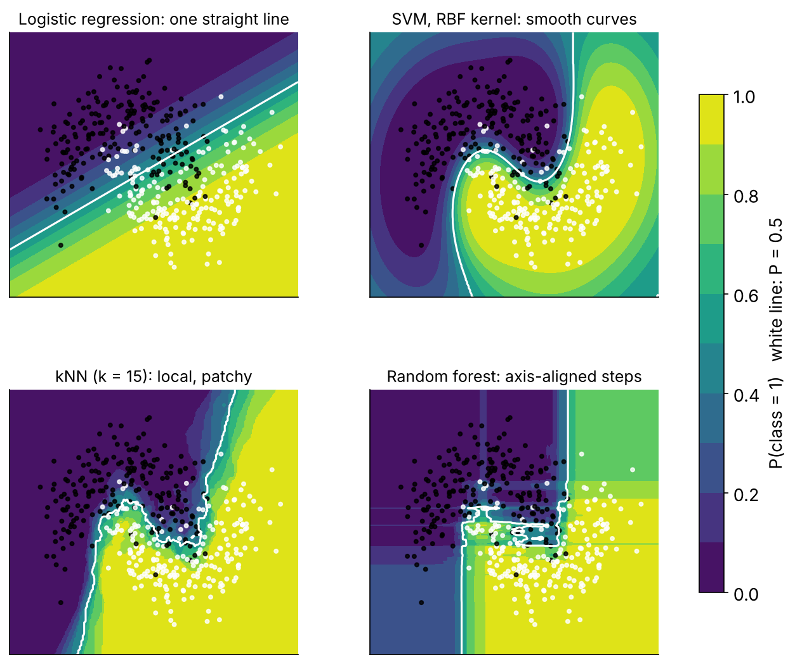
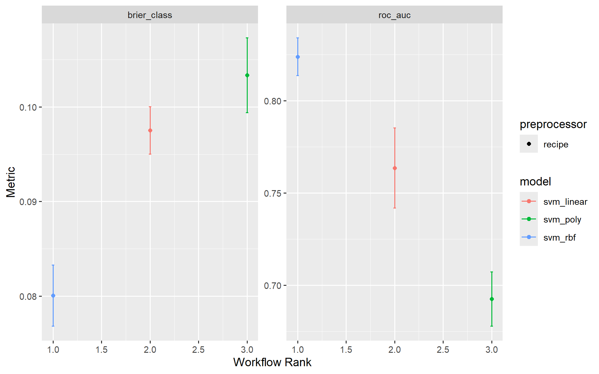

# WHERE WE ARE ---------------------------------------------------------------------------------------------
# T1 = the pipeline + logistic baseline (replayed by R/prep_nhms.R). T2 = trees and the random forest, fitted
# with fit_resamples() on the same dm_folds and the same cls_metrics. NEW TODAY: the second family - support
# vector machines - and the first model for which the recipe's normalisation step is not optional.
source("R/prep_nhms.R")
library(patchwork)
library(future)
plan(multisession, workers = max(1, parallel::detectCores() - 1))Tutorial 3 · Support vector machines
Session 4 · Day 1, 15.50–17.00 · Slides 04
0 · Start
1 · The idea, in four pictures
In one paragraph
Start with one predictor and two classes. A threshold classifies, but a point just over it is called positive even when it looks like the negatives. The maximal-margin classifier puts the boundary halfway between the closest members of the two classes — as far from both as possible. One outlier drags that boundary into a terrible place, so we allow some points inside the margin or on the wrong side: a soft margin, whose generosity is set by cross-validation. That is a support vector classifier; the support vectors are the few points that touch or cross the margin — the only ones that matter. In two dimensions the boundary is a line, in three a plane, in p a hyperplane — still straight. When the classes overlap so that no straight boundary works, a kernel maps the data into a higher dimension where they are separable by a hyperplane, and the boundary projected back is curved. The kernel trick means you never compute the high-dimensional coordinates, only similarities between pairs of points.

Two kernels you will use:
| Kernel | parsnip | Shape | Flexibility knob |
|---|---|---|---|
| Linear | svm_linear(cost) |
hyperplane | — |
| Polynomial | svm_poly(cost, degree, scale_factor) |
polynomial curve | degree: 1 = linear, 2–3 = gentle curves, higher = wiggly |
| Radial basis (RBF) | svm_rbf(cost, rbf_sigma) |
Gaussian bumps around support vectors; can enclose islands | rbf_sigma: large = narrow bumps = wiggly; small = wide bumps = smooth |
And the knob every kernel shares: cost — the penalty for a point violating the margin. High cost → narrow margin, fits the training data closely, overfits. Low cost → wide margin, underfits. Tune it on a log₂ scale.
2 · What an SVM needs from the recipe
Two non-negotiables:
- Numeric predictors — SVMs compute distances; “Indian” has no distance from “Malay”.
step_dummy(). - Scaled predictors — otherwise
hh_income(thousands) defines the distance andage(tens) is ignored.step_normalize().
dm_rec already does both, which is why it was written that way in Tutorial 1. One engine-specific wrinkle: kernlab::ksvm() quietly standardises numeric inputs itself (scaled = TRUE is its default), so with this engine an unscaled recipe is rescued behind your back. Other SVM implementations (LiblineaR, e1071 with scale = FALSE, anything you write in Python) do not, and neither do the neural networks this afternoon — keep the scaling in the recipe, where it is visible, versioned and applied identically at prediction time.
dm_rec3 · Three kernels, one workflow
svm_lin_spec <- svm_linear(cost = 1) |> set_engine("kernlab") |> set_mode("classification")
svm_poly_spec <- svm_poly(cost = 1, degree = 2) |> set_engine("kernlab") |> set_mode("classification")
svm_rbf_spec <- svm_rbf(cost = 1, rbf_sigma = 0.005) |> set_engine("kernlab") |> set_mode("classification")rbf_sigma = 0.005 is a reasonable start for ~45 scaled predictors (kernlab’s own heuristic, sigest(), lands nearby). Leave it out and kernlab estimates it for you.
Fit the RBF version once and look at what came back:
svm_rbf_fit <- workflow(dm_rec, svm_rbf_spec) |> fit(dm_train)
svm_rbf_fit |> extract_fit_engine()Support Vector Machine object of class "ksvm"
SV type: C-svc (classification)
parameter : cost C = 1
Gaussian Radial Basis kernel function.
Hyperparameter : sigma = 0.005
Number of Support Vectors : 1086
Objective Function Value : -907.9629
Training error : 0.115779
Probability model included. Note the number of support vectors — the people that define the boundary — and that kernlab fitted a logistic model on top (“probability model”) so that we can get .pred_Yes. SVMs do not produce probabilities natively; this Platt scaling is a bolt-on, and its calibration is so-so (Tutorial 6 will show you how to check).
augment(svm_rbf_fit, dm_train) |> cls_metrics(truth = undx_dm, estimate = .pred_class, .pred_Yes)That is the training performance — reported only to make a point in Your turn. The honest number is below.
4 · Honest comparison on the five folds
set.seed(2026)
svm_res <- workflow_set(
preproc = list(base = dm_rec),
models = list(linear = svm_lin_spec, poly2 = svm_poly_spec, rbf = svm_rbf_spec)
) |>
workflow_map("fit_resamples", resamples = dm_folds, metrics = cls_metrics, seed = 2026, verbose = TRUE)maximum number of iterations reached 0.002334747 -0.002211177maximum number of iterations reached 0.00694341 -0.006086287maximum number of iterations reached 0.0002650637 -0.0002616375line search fails -0.1885002 -1.510117 2.20099e-05 3.454223e-06 -4.066054e-09 -3.471025e-09 -1.014831e-13line search fails -0.1895854 -1.503686 1.876434e-05 2.958768e-06 -3.454534e-09 -2.960713e-09 -7.358211e-14rank_results(svm_res, rank_metric = "roc_auc", select_best = TRUE) |>
filter(.metric %in% c("roc_auc", "brier_class")) |>
select(wflow_id, .metric, mean, std_err)autoplot(svm_res, metric = c("roc_auc", "brier_class"))
Three things to notice while it runs:
- It is slower than the forest. SVM training cost grows roughly with n² (every pair of points enters the kernel matrix). 4,000 rows is fine; 400,000 is not. The probability model roughly doubles the time again.
- The kernels are usually within one standard error of each other here — and of this morning’s logistic regression. The simulated truth is close to additive with a few interactions, and a linear SVM on 45 scaled dummies is, in effect, a regularised logistic regression.
- Nothing in the output tells you why a person was classified. No coefficients you can read (except for the linear kernel), no trees, no importances without the model-agnostic tools of Tutorial 6.
5 · Where SVMs fit today
SVMs were the best general-purpose classifier from roughly 1995 to 2010. Gradient boosting took that title for tabular data (tomorrow morning) and deep learning took it for images and text. They remain excellent for small, high-dimensional, clean problems — gene-expression panels, text classification, some signal problems — and the margin idea underpins a lot of later theory. For survey-type health data you will rarely choose one over XGBoost, but you should be able to fit, tune and explain one when a reviewer asks.
dir.create("outputs", showWarnings = FALSE)
saveRDS(svm_res, "outputs/t03_svm_res.rds") # kept for reference; nothing later depends on itYour turn (15 min)
Solution A
costs <- c(0.1, 1, 10, 100)
svm_costs <- lapply(costs, \(cst) svm_rbf(cost = cst, rbf_sigma = 0.005) |> set_engine("kernlab") |> set_mode("classification"))
names(svm_costs) <- paste0("cost_", costs)
set.seed(2026)
cost_cv <- workflow_set(preproc = list(base = dm_rec), models = svm_costs) |>
workflow_map("fit_resamples", resamples = dm_folds, metrics = metric_set(roc_auc), seed = 2026)
cv_auc <- collect_metrics(cost_cv) |>
transmute(cost = readr::parse_number(wflow_id), cv_auc = mean, se = std_err)
train_auc <- tibble(
cost = costs,
train_auc = sapply(svm_costs, \(spec) workflow(dm_rec, spec) |> fit(dm_train) |>
augment(dm_train) |> roc_auc(undx_dm, .pred_Yes) |> pull(.estimate))
)
left_join(cv_auc, train_auc, by = "cost")A1: training AUC climbs toward 1 as cost rises (the margin narrows and the boundary bends around individual points) while CV AUC flattens or falls — the classic overfitting gap. A2: the CV optimum is usually at cost ≈ 1 or below; it is worth probing 0.01–0.3 as well. This is exactly what tune_grid() automates tomorrow, on a log scale.
Solution B
rec_noscale <- recipe(undx_dm ~ ., data = dm_train) |>
step_impute_median(all_numeric_predictors()) |>
step_impute_mode(all_nominal_predictors()) |>
step_dummy(all_nominal_predictors()) |>
step_zv(all_predictors())
svm_raw_spec <- svm_rbf(cost = 1, rbf_sigma = 0.005) |>
set_engine("kernlab", scaled = FALSE) |> # stop kernlab from standardising internally
set_mode("classification")
set.seed(2026)
noscale_res <- fit_resamples(workflow(rec_noscale, svm_raw_spec), dm_folds, metrics = metric_set(roc_auc, brier_class))
collect_metrics(noscale_res)Noticeably worse: with hh_income in ringgit dominating every distance, the kernel “sees” income and little else. Scaling is not a nicety for distance-based methods (SVMs, neural networks); it is part of the model. (Had you left kernlab’s default scaled = TRUE, the two recipes would have tied — and you would have learned the wrong lesson. Know what your engine does for you.)
What to remember
- SVM = widest possible street between the classes, with a
cost-controlled tolerance for violations. - Kernels bend the street;
rbf_sigma/degreeset how much. Both knobs need tuning on a log scale. - Numeric + scaled inputs are mandatory. Probabilities are a bolt-on; check their calibration.
- Slow for large n; opaque without model-agnostic explanation tools.
Next (Day 2, 09.15): Tutorial 4 — gradient boosting with XGBoost, and the bake-off of all four.